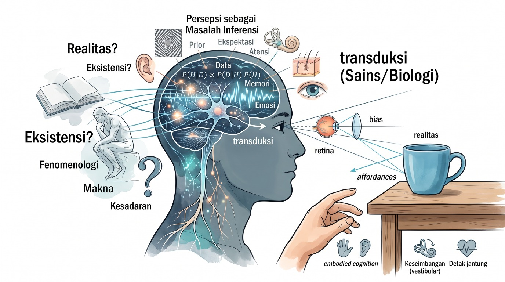

Persepsi: antara dunia yang kita alami dan dunia yang ada
Ketika melihat sebuah cangkir di atas meja, kita biasanya merasa sedang berhadapan langsung dengan benda itu: cangkir berada di sana, berwarna dan berbentuk tertentu. Namun pengalaman tersebut bukan salinan sederhana dari dunia luar. Cahaya yang dipantulkan cangkir berubah menjadi sinyal retina; sistem saraf mengolah sinyal itu bersama perhatian, gerak, ingatan, dan konteks. Kita mengalami cangkir, bukan aktivitas saraf yang memungkinkan pengalaman itu.
Di sinilah persepsi menjadi persoalan sekaligus ilmiah dan filosofis. Sains meneliti mekanisme yang membuat pengalaman mungkin dan kondisi yang mengubahnya. Filsafat bertanya apa hubungan pengalaman itu dengan realitas, bagaimana kita mengetahui sesuatu, dan apa arti mengalami. Keduanya tidak saling menggantikan: penjelasan mekanisme belum dengan sendirinya menjawab semua pertanyaan tentang makna dan pengetahuan.

1. Apa yang disebut persepsi?
Secara umum, persepsi adalah proses ketika organisme memperoleh dan mengorganisasi informasi tentang lingkungan maupun tubuhnya, lalu menggunakannya untuk mengenali keadaan dan membimbing tindakan. Persepsi mencakup penglihatan, pendengaran, sentuhan, penciuman, dan pengecapan, tetapi juga propriosepsi (rasa posisi dan gerak tubuh), vestibular (keseimbangan dan percepatan), serta interosepsi (keadaan internal seperti napas, detak jantung, dan rasa lapar).
Persepsi perlu dibedakan dari beberapa proses yang berkaitan:
- Sensasi merujuk pada respons reseptor dan jalur awal terhadap energi atau perubahan fisik—misalnya tekanan pada kulit atau cahaya pada retina.
- Persepsi merujuk pada pengorganisasian informasi menjadi pengalaman bermakna—misalnya mengenali tekanan sebagai sentuhan pada bahu.
- Perhatian memilih atau memprioritaskan sebagian informasi untuk pemrosesan lebih lanjut; perhatian dapat memengaruhi apa yang kita sadari, tetapi tidak identik dengan persepsi.
- Kognisi mencakup proses seperti penalaran, ingatan, bahasa, dan perencanaan. Proses-proses ini dapat memengaruhi persepsi dan juga dipengaruhi olehnya.
Pembedaan tersebut berguna sebagai alat analisis, bukan batas yang selalu tegas di dalam otak. Dalam perilaku nyata, penginderaan, perhatian, gerak, emosi, dan penafsiran saling berinteraksi.
2. Dari energi fisik ke pengalaman
Setiap sistem indera peka terhadap jenis energi atau perubahan tertentu. Fotoreseptor retina merespons cahaya; sel rambut di koklea merespons getaran; reseptor kulit merespons tekanan, suhu, atau zat kimia. Transduksi mengubah perubahan fisik itu menjadi sinyal elektrokimia yang dapat diproses oleh sistem saraf.
Namun reseptor tidak mengirimkan deskripsi lengkap dunia. Retina, misalnya, tidak menerima gambar kecil seperti foto yang kemudian diproyeksikan di dalam kepala. Sistem visual memproses kontras, warna, gerak, kedalaman, dan bentuk melalui jaringan yang saling terhubung. Jalur sensorik memiliki spesialisasi, tetapi pemrosesan tidak sepenuhnya terpisah: informasi dari berbagai daerah otak digabungkan sesuai tugas dan konteks.
Sinyal juga tidak lengkap dan sering ambigu. Pada retina, informasi tentang panjang gelombang diterima melalui tiga kelas utama kerucut yang peka pada rentang berbeda; pengalaman warna kemudian bergantung pada perbandingan respons, konteks pencahayaan, dan pemrosesan lanjutan. Suara yang sama dapat terasa berbeda di ruangan yang berbeda. Persepsi karena itu bukan semata-mata pembacaan satu-ke-satu atas stimulus.
3. Persepsi sebagai masalah inferensi
Untuk mengenali benda atau peristiwa, sistem perseptual perlu mengatasi ketidakpastian. Bayangan dua dimensi di retina dapat berasal dari banyak susunan tiga dimensi. Suara teredam dapat menandakan sumber jauh, penghalang, atau perangkat yang kualitasnya rendah. Informasi saat ini biasanya tidak cukup untuk menentukan satu penjelasan secara pasti.
Salah satu pendekatan yang berpengaruh dalam ilmu kognitif adalah pemrosesan prediktif: sistem saraf menggunakan model atau ekspektasi yang telah terbentuk untuk menafsirkan sinyal, lalu menyesuaikan model itu ketika masukan tidak sesuai. Dalam kerangka Bayesian, persepsi dapat dimodelkan sebagai penggabungan bukti sensorik dengan prior, yaitu ekspektasi atau pengetahuan awal. Secara skematis:
\[ P(H \mid D) \propto P(D \mid H)P(H) \]
Di sini, \(H\) adalah hipotesis tentang penyebab atau keadaan dunia, \(D\) adalah data sensorik, \(P(D \mid H)\) menunjukkan seberapa cocok data dengan hipotesis, dan \(P(H)\) adalah prior. Persamaan ini menjelaskan bentuk penalaran probabilistik; ia bukan klaim bahwa otak secara sadar menghitung rumus tersebut atau bahwa seluruh persepsi sudah dijelaskan oleh satu teori.
Pengetahuan sebelumnya memang dapat mengubah cara stimulus ambigu dialami. Akan tetapi, besarnya pengaruh prior bergantung pada tugas, tingkat ketidakpastian, dan bukti yang tersedia. Istilah “otak membuat prediksi” tidak berarti pengalaman hanyalah khayalan. Masukan dari dunia tetap membatasi interpretasi dan kesalahan prediksi dapat mendorong revisi.
4. Apa yang ditunjukkan eksperimen persepsi?
Psikofisika meneliti hubungan terukur antara stimulus fisik dan respons atau pengalaman yang dilaporkan. Peneliti dapat mengubah intensitas suara, kontras, durasi, atau jarak, lalu mengamati kapan peserta mendeteksi, membedakan, atau mengidentifikasi stimulus. Metode seperti ini membantu mengukur ambang deteksi, diskriminasi, dan pengaruh konteks.
Ilusi perseptual juga penting. Ilusi bukan sekadar trik atau bukti bahwa indera tidak dapat dipercaya. Ilusi menampakkan cara sistem biasanya menyelesaikan masalah yang sulit: memakai konteks, mengasumsikan pencahayaan yang relatif stabil, mengorganisasi bagian menjadi bentuk, atau menaksir kedalaman dari petunjuk yang tidak sempurna. Strategi yang umumnya berguna dapat menghasilkan kekeliruan dalam keadaan khusus.
Eksperimen biasanya mengisolasi variabel untuk menguji hipotesis tertentu. Itu memberi kendali dan keterukuran, tetapi situasi laboratorium tidak selalu mewakili pengalaman sehari-hari yang melibatkan tujuan, gerak, interaksi sosial, dan lingkungan yang berubah. Karena itu, hasil laboratorium perlu dipadukan dengan bukti dari tugas alami, studi lintas individu, pencitraan atau pengukuran saraf, dan penelitian klinis—dengan memperhatikan batas inferensi masing-masing metode.
5. Perhatian, emosi, tubuh, dan lingkungan
Persepsi bukan kegiatan indera yang berlangsung terpisah dari kebutuhan organisme.
- Perhatian dapat memperkuat pemrosesan sebagian informasi dan mengurangi akses terhadap informasi lain. Eksperimen perubahan tak terduga atau change blindness memperlihatkan bahwa kita bisa melewatkan perubahan visual besar ketika perhatian terarah ke hal lain. Ini bukan bukti bahwa kita selalu buta terhadap dunia, melainkan pengingat bahwa pengalaman sadar tidak mencakup seluruh detail yang tersedia.
- Emosi dan tujuan dapat memengaruhi apa yang dicari dan bagaimana rangsangan ambigu ditafsirkan. Namun temuan tentang pengaruh motivasi harus dinilai per tugas; tidak semua efek bersifat besar atau konsisten.
- Tubuh memberi informasi sekaligus menjadi pelaku. Gerak mata, kepala, dan tubuh mengubah masukan sensorik. Rasa posisi, keseimbangan, dan keadaan internal membantu kita memahami di mana kita berada serta apa yang dapat kita lakukan.
- Konteks sosial dan budaya menyediakan kebiasaan, kategori, bahasa, dan pengetahuan yang dapat membimbing perhatian dan penafsiran. Pengaruhnya nyata tetapi tidak seragam: kita tidak boleh menganggap setiap perbedaan persepsi antarkelompok sebagai bukti perbedaan biologis ataupun budaya tanpa rancangan penelitian yang memadai.
Pendekatan ekologis dan embodied cognition menekankan keterkaitan antara persepsi, tindakan, tubuh, dan lingkungan. Kita sering tidak perlu membangun representasi lengkap dunia sebelum bertindak; informasi yang tersedia dapat langsung membimbing tindakan tertentu, seperti menjangkau, menghindar, atau menjaga keseimbangan. Pendekatan ini melengkapi penjelasan komputasional, meski tidak semua peneliti sepakat mengenai seberapa jauh konsep representasi dapat atau perlu ditinggalkan.
6. Perdebatan filosofis: apa yang kita persepsi?
Pertanyaan filosofis tentang persepsi telah muncul jauh sebelum ilmu saraf modern dan terus berubah ketika bukti empiris berkembang.
Realisme dan akses kita pada dunia
Realisme secara umum menyatakan bahwa dunia tidak bergantung sepenuhnya pada pengalaman kita. Tantangannya adalah menjelaskan bagaimana pengalaman yang berubah-ubah dan dapat keliru tetap memberi akses yang andal kepada dunia. Fakta bahwa persepsi dapat salah tidak otomatis membatalkan realisme; ia menuntut penjelasan tentang bagaimana keberhasilan dan kesalahan sama-sama mungkin.
Sejumlah teori representasional menyatakan bahwa pengalaman perseptual menghadirkan dunia melalui representasi atau isi tertentu. Kita dapat melihat representasi itu sebagai hasil pemrosesan yang dapat akurat atau keliru, bukan sebagai gambar mental yang disaksikan oleh “penonton kecil” di dalam otak. Teori-teori ini berbeda dalam menjelaskan jenis isi pengalaman dan hubungan isi tersebut dengan objek.
Persepsi langsung dan pendekatan ekologis
Tradisi realisme langsung menekankan bahwa dalam keadaan biasa kita mempersepsi benda dan peristiwa, bukan terlebih dahulu menyadari sensasi batin yang kemudian disimpulkan sebagai benda. Pendekatan ekologis James J. Gibson menyoroti informasi yang tersedia dalam hubungan organisme-lingkungan serta affordances: kemungkinan tindakan yang ditawarkan lingkungan kepada makhluk tertentu.
“Langsung” dalam konteks ini tidak harus berarti tanpa pemrosesan saraf. Perdebatan utamanya menyangkut apa yang menjelaskan isi pengalaman dan apakah model representasi internal diperlukan, bukan apakah otak berperan.
Fenomenologi dan pengalaman orang pertama
Fenomenologi mengkaji struktur pengalaman sebagaimana dialami: keterarahan pada sesuatu, perbedaan antara latar dan fokus, hubungan tubuh dengan ruang, serta bagaimana makna muncul dalam kehidupan sehari-hari. Pendekatan ini mengingatkan sains bahwa pengalaman orang pertama bukan sekadar gangguan yang harus diabaikan.
Laporan pengalaman dapat dipelajari secara sistematis, tetapi juga memiliki keterbatasan: perhatian dan bahasa tidak selalu mampu mengungkap seluruh proses, sementara ingatan atas pengalaman dapat berubah. Karena itu, deskripsi fenomenologis dapat berdialog dengan eksperimen dan ilmu saraf, bukan menggantikannya.
Kant dan kondisi pengalaman
Immanuel Kant membedakan antara dunia sebagaimana tampil dalam pengalaman dan realitas sebagaimana adanya terlepas dari cara manusia mengenalnya. Dalam filsafatnya, struktur pengindraan dan pemahaman ikut membentuk pengalaman yang mungkin bagi kita. Gagasan ini bukan teori neurosains dan tidak dapat disederhanakan menjadi klaim bahwa “otak menciptakan realitas”. Kontribusinya adalah menegaskan bahwa pengetahuan manusia memiliki kondisi dan batas.
Kesadaran dan kualitas pengalaman
Sains dapat mengaitkan aspek pengalaman dengan aktivitas saraf, perubahan perilaku, dan laporan peserta. Namun masih ada perdebatan tentang bagaimana menjelaskan bahwa pemrosesan tertentu disertai pengalaman subjektif—misalnya bagaimana merah terasa bagi seseorang. Ini sering disebut masalah kesadaran fenomenal atau, dalam formulasi David Chalmers, “masalah sulit” kesadaran.
Perdebatan ini tidak berarti sains tidak mengetahui apa pun tentang kesadaran. Banyak aspek fungsi kesadaran dapat diteliti; pertanyaan yang diperdebatkan adalah apakah penjelasan fungsional dan saraf sepenuhnya menjelaskan kualitas pengalaman itu sendiri.
7. Persepsi, pengetahuan, dan kesalahan
Persepsi adalah sumber pengetahuan penting tetapi dapat keliru. Ilusi, halusinasi, bias perhatian, dan keterbatasan ingatan menunjukkan bahwa pengalaman terasa meyakinkan bukan jaminan bahwa penafsirannya benar. Di sisi lain, menyimpulkan bahwa persepsi selalu menyesatkan juga keliru: tindakan dan pengamatan yang berulang memungkinkan kita menguji dugaan, memperbaiki kesalahan, dan membangun pengetahuan bersama.
Kita meningkatkan keandalan dengan membandingkan pengamatan dari sudut berbeda, menggunakan instrumen, mencatat prosedur, mencari penjelasan alternatif, dan mengundang pemeriksaan orang lain. Instrumen memperluas kemampuan indera tetapi juga membawa asumsi kalibrasi, desain, dan pengolahan data. Objektivitas karena itu bukan pandangan tanpa perspektif, melainkan praktik untuk membuat perspektif dan kemungkinan kesalahan dapat diperiksa.
Penting pula membedakan pengalaman keliru sesaat dari gejala klinis. Halusinasi dan gangguan persepsi dapat berkaitan dengan berbagai kondisi kesehatan, tidur, zat, atau faktor neurologis. Pengalaman semacam itu tidak cukup untuk menetapkan diagnosis; penilaian membutuhkan konteks dan tenaga profesional.
8. Mengapa kajian persepsi berguna?
Pemahaman tentang persepsi relevan jauh di luar laboratorium:
- Desain dan teknologi: antarmuka, visualisasi data, rambu, dan produk perlu memperhitungkan batas perhatian, kontras, ekspektasi, dan konteks penggunaan.
- Keputusan dan organisasi: saksi, analis, dan pemimpin dapat memiliki akses pada data yang sama tetapi memperhatikannya secara berbeda. Pemisahan observasi dari interpretasi membantu mengurangi keyakinan berlebihan.
- Komunikasi sains: grafik yang akurat secara teknis masih dapat menyesatkan bila skala, warna, atau penyajian tidak mendukung pembacaan yang tepat.
- Pendidikan: pemahaman dibentuk oleh perhatian dan pengetahuan awal; pengajaran yang baik membantu peserta didik menguji serta memperbarui model mental, bukan hanya menerima informasi.
- Etika dan kehidupan bersama: orang yang tidak sepakat belum tentu sekadar mengabaikan fakta. Mereka mungkin mengamati aspek berbeda, memakai kerangka interpretasi berbeda, atau mempercayai sumber yang berbeda. Memahami proses ini dapat membantu dialog, tanpa menyiratkan bahwa semua klaim sama benarnya.
9. Kesimpulan: pengalaman sebagai pertemuan
Persepsi bukan salinan pasif dunia dan bukan pula ciptaan bebas pikiran. Ia adalah proses aktif yang bergantung pada tubuh dan sistem saraf, dibatasi oleh lingkungan, dibimbing oleh perhatian dan pengalaman sebelumnya, serta digunakan untuk bertindak.
Sains menjelaskan banyak mekanisme dan kondisi yang membentuk persepsi, tetapi model ilmiah selalu memiliki ruang lingkup dan tingkat kepastian tertentu. Filsafat membantu memperjelas apa yang dimaksud dengan realitas, pengalaman, pengetahuan, dan kesadaran—serta menunjukkan pertanyaan yang tidak selesai hanya dengan menemukan korelasi saraf.
Sikap yang produktif bukan memilih antara “inderaku selalu benar” dan “semua pengalaman hanyalah ilusi”. Kita dapat memperlakukan pengalaman sebagai bukti yang bernilai tetapi dapat dikoreksi: memperhatikan bagaimana ia terbentuk, mengujinya dengan metode yang sesuai, dan tetap terbuka pada batas penjelasan yang kita miliki.
Bacaan lanjutan
- Gregory, R. L. (1997). Knowledge in Perception and Illusion. Philosophical Transactions of the Royal Society B, 352(1358), 1121–1127. https://doi.org/10.1098/rstb.1997.0095
- Gibson, J. J. (1979). The Ecological Approach to Visual Perception. Houghton Mifflin.
- Goldstein, E. B., & Cacciamani, L. (2022). Sensation and Perception (11th ed.). Cengage.
- Kant, I. (1781/1787). Critique of Pure Reason.
- Merleau-Ponty, M. (1945). Phenomenology of Perception.
- Chalmers, D. J. (1995). “Facing Up to the Problem of Consciousness.” Journal of Consciousness Studies, 2(3), 200–219.
- Clark, A. (2013). Whatever Next? Predictive Brains, Situated Agents, and the Future of Cognitive Science. Behavioral and Brain Sciences, 36(3), 181–204. https://doi.org/10.1017/S0140525X12000477